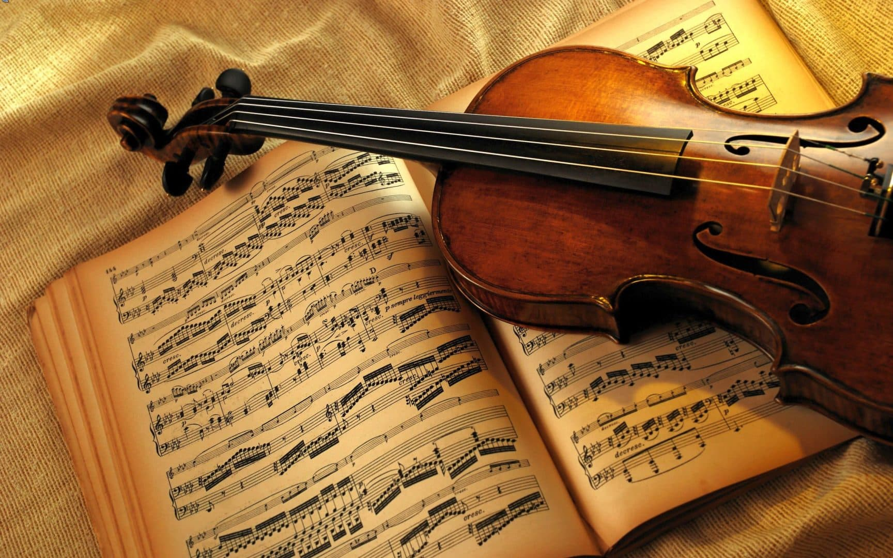

Música Clássica
A música clássica é conhecida por suas composições elaboradas e complexas, com ênfase em harmonia, melodia e orquestração. Surgiu na Europa, entre os séculos XVII e XIX, e inclui compositores icônicos como Beethoven, Bach e Mozart. Seus estilos variam desde as sinfonias majestosas até as delicadas peças de câmara. A música clássica é ideal para quem busca profundidade emocional e um tipo de música atemporal.
